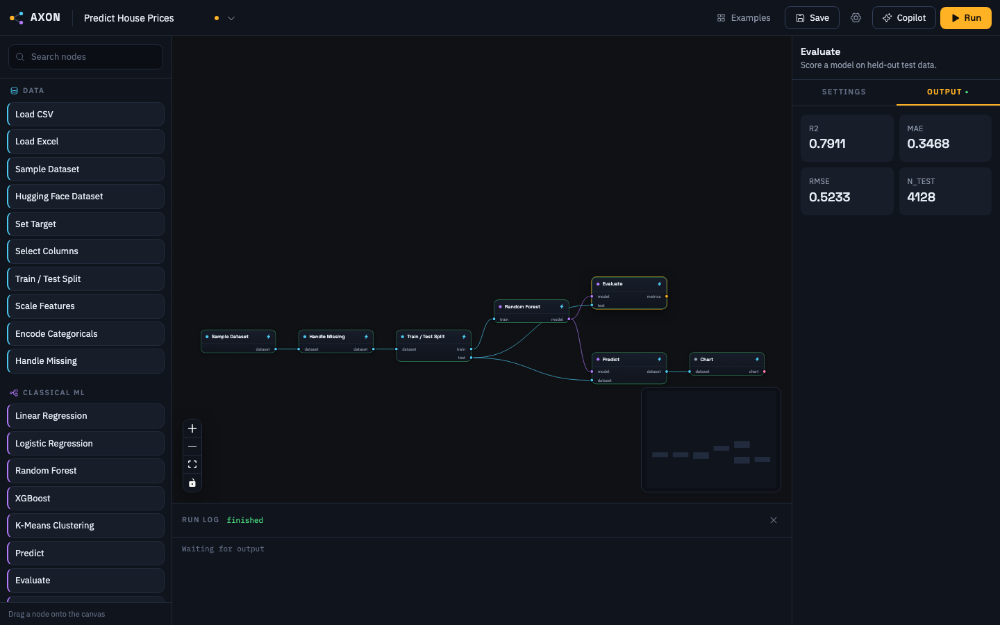
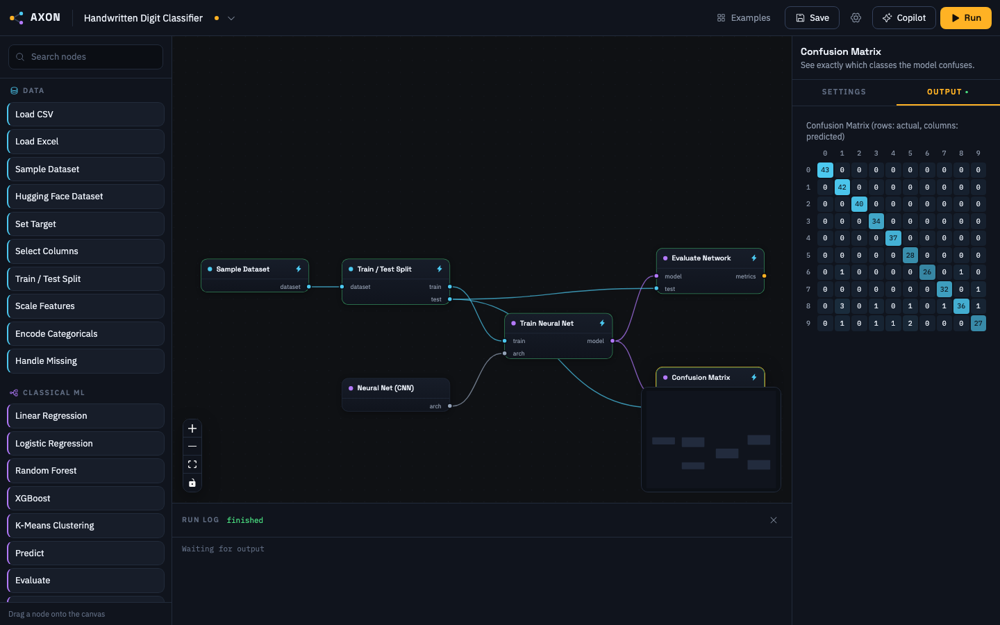
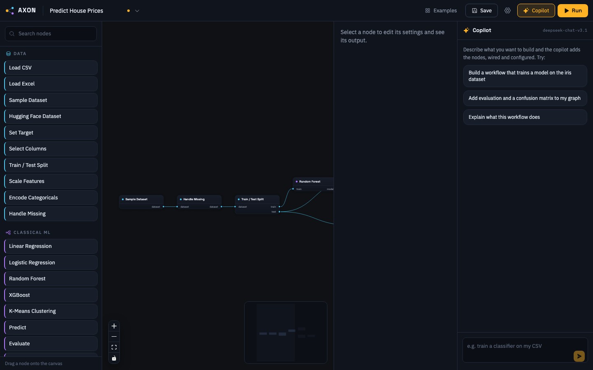
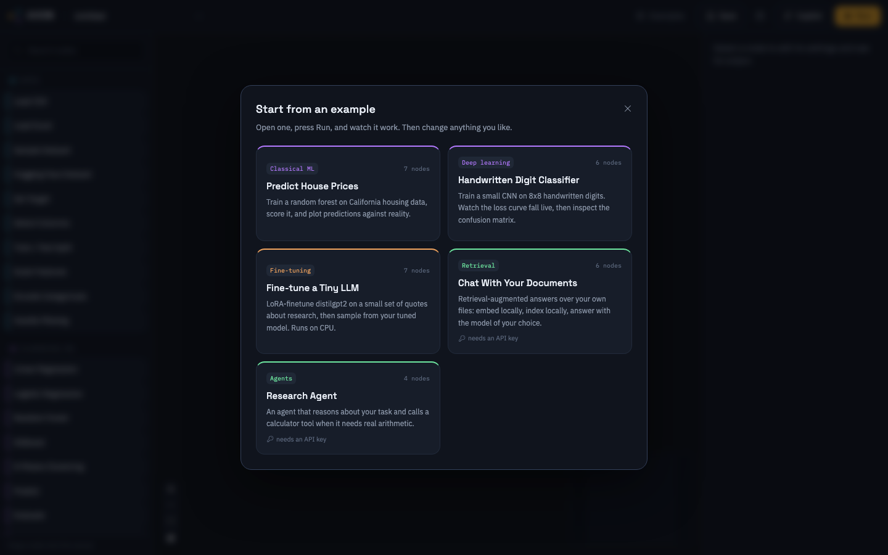

Axon is a local-first visual workspace for AI. Wire nodes together, press Run, and watch real models train on your machine.

git clone https://github.com/Samyrrrrrr990/axon && cd axon && ./axon.sh
macOS and Linux, Windows through WSL. The environment is created for you; heavy libraries install only when a workflow needs them.
No notebooks, no dependency hell, no boilerplate. The graph is the program.
One command creates the environment and opens Axon in your browser at localhost:8700.
Drag nodes from the palette onto the canvas. Sockets are typed and color-coded, so a dataset only plugs into something that accepts a dataset. Wrong connections refuse politely.
Every node reports live status. Training nodes stream their loss curves as they learn. Change one node and only the affected part of the pipeline recomputes; the rest loads from cache instantly.
Train scikit-learn, XGBoost, and PyTorch models locally. The loss curve falls live on the canvas, and every result is inspectable: tables, metrics, charts, confusion matrices.

A CNN trained on handwritten digits inside Axon: 95.8% test accuracy, confusion matrix in the inspector.
Tell the copilot what you want to build and it adds the nodes, wired and configured. It speaks a restricted graph-operations language, never arbitrary code, and every edit is validated against the type system before it touches your canvas.

Five examples ship in the box, from a random forest on housing data to a tool-using research agent. Open one, press Run, then change anything. Each workflow is a single portable file you can send to a colleague.

Axon's mission is accessible machine learning research. Commercial licensing is what keeps the free tier free, with no ads, no telemetry, and no feature gates.
$0 forever
For researchers, students, nonprofits, and personal projects.
Simple flat licensing
For for-profit research, development, and products built with Axon.
Clone the repository, run one command, and open an example.